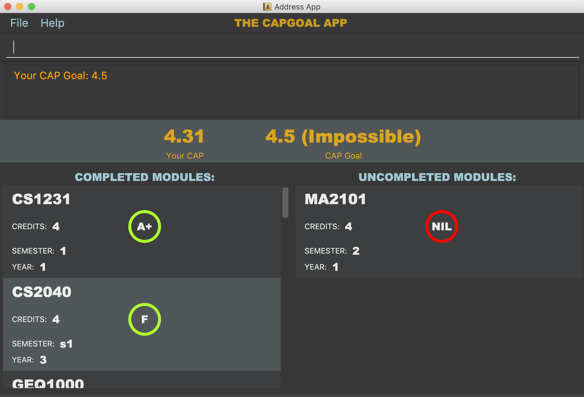

By: T13-4 Since: Aug 2018 Licence: MIT
- 1. Introduction
- 2. Quick Start
- 3. Features
- 3.1. Viewing help :
help - 3.2. Adding a module:
c_add - 3.3. Editing a module :
c_edit - 3.4. Deleting a module :
c_delete - 3.5. Setting Cap Goal :
goal - 3.6. Adjusting target goals:
adjust - 3.7. Undoing commands :
c_undo - 3.8. Redoing commands :
c_redo - 3.9. Exiting the program :
exit - 3.10. Saving the data
- 3.11. Understanding the User Interface
- 3.1. Viewing help :
- 4. FAQ
- 5. Command Summary
1. Introduction
CAPTracker is for students who wants to use a desktop app for calculating and managing their CAP (Cumulative Average Point). More importantly CAPTracker is optimized for those who prefer to work with a CLI (Command Line Interface) while still having the benefits of a Graphical User Interface (GUI). If you can type fast, CAPTracker is the ideal application for calculating your current CAP, and predicting grades needed to achieve your ideal CAP in modules that hasn’t been taken. Interested? Jump to the Section 2, “Quick Start” to get started. Enjoy!
2. Quick Start
-
Ensure you have Java version
10or later installed in your Computer. -
Download the latest
captracker.jarhere. -
Copy the file to the folder you would want to use as the home folder for your CAP Tracker.
-
Double-click the file to start the app. The GUI should appear in a few seconds.
 -
Type the command in the command box and press Enter to execute it.
e.g. Typinghelpand pressing Enter will open the help window. -
Some commands you can try:
-
c_add-m CS2103 -y 2 -s 1 -c 4 -g A+: Adds a moduleCS2103worth4MCs taken in Semester1as a Year2student. -
**
c_delete -t CS2103 -e 2 -z 1: DeletesCS2103taken in year2semester1from CAPTracker. -
exit: Exits the app
-
-
Refer to Section 3, “Features” for details of each command.
3. Features
Command Format
-
Words in
UPPER_CASEare the parameters to be replaced and supplied by the user.
e.g.c_add MODULE_CODE YEAR SEMESTER CREDIT [GRADE]:
c_add CS2103 2 1 4 A+. -
Items in square brackets are optional.
e.g.c_add MODULE_CODE YEAR SEMESTER CREDIT [GRADE]:
c_add CS2103 2 1 4 A+or
c_add CS2103 2 1 4
3.1. Viewing help : help
Format: help
3.2. Adding a module: c_add
Adds a particular module entry in the CAPTracker.
Case 1:
Add incomplete module (Not graded yet).
Format:
c_add -m CODE -y YEAR -s SEMESTER -c CREDIT
Case 2:
Add completed module (With grade).
Format:
c_add -m CODE -y YEAR -s SEMESTER -c CREDIT -g GRADE
3.3. Editing a module : c_edit
Edits fields of a particular module entry in the CAPTracker.
Case 1:
Only one module entry have the specified target module code.
Pretty Print Format:
c_edit -t TARGET_CODE
[-m NEW_CODE]
[-y NEW_YEAR]
[-s NEW_SEMESTER]
[-c NEW_CREDIT]
[-g NEW_GRADE]
Case 2:
More than one module entry in CAPTracker has the specified target module
code. (E.g. Retook the module)
Pretty Print Format:
c_edit -t TARGET_CODE -e TARGET_YEAR -z TARGET_SEMESTER
[-m NEW_CODE]
[-y NEW_YEAR]
[-s NEW_SEMESTER]
[-c NEW_CREDIT]
[-g NEW_GRADE]
Examples:
-
c_edit -t CS2103 -g A+
Change grade of CS2103 to A+. -
c_edit -t CS2103 -m CS2103T -c 2
Change the module code and credit of CS2103 to CS2103T and 2 respectively. -
c_edit -t CS2103 -e 3 -z 2 -s 1
Change the semester of CS2103 taken in year 3 semester 2 to 1. In this specific case, CS2103 was retaken and cap tracker has multiple entries of it.
3.4. Deleting a module : c_delete
Deletes a particular module entry in the CAPTracker.
Case 1:
Only one module entry have the specified target module code.
Format:
c_delete -t TARGET_CODE
Case 2:
More than one module entry in CAPTracker has the specified target module code. (E.g. Retook
the module)
Format:
c_delete -t TARGET_CODE -e TARGET_YEAR -z TARGET_SEMESTER
Examples:
-
c_delete -t CS2103
Deletes the only CS2103 module. -
c_delete -t CS2103 -e 3 -z 2
Deletes CS2103 taken in year 3 semester 2. In this specific case, CS2103 was retaken and cap tracker has multiple entries of it.
3.5. Setting Cap Goal : goal
Set the CAP goal you want to achieve.
Format: goal CAP_GOAL
Examples:
-
goal 4.5
Update your CAP goal to 4.5
3.6. Adjusting target goals: adjust
| Removal of adjustment will be made available in the following release. For now, delete and add the module without a grade again. |
Adjust the grade of an incomplete module
Format:
-
Module code is unique:
adjust MODULE_CODE GRADE -
Otherwise:
adjust MODULE_CODE YEAR SEM GRADE
Examples:
-
adjust CS2103 A
Adjusts the grade with module code CS2103 to have grade A -
adjust CS2103 1 1 A
Adjusts the grade with module code CS2103 taken in year 1 sem 1 to have grade A
3.7. Undoing commands : c_undo
Reverts changes made by the last command given.
Format: c_undo
3.8. Redoing commands : c_redo
Reverts changes made by the undo command.
Format: c_redo
3.9. Exiting the program : exit
Exits the program.
Format: exit
3.10. Saving the data
CAPTracker data are saved in the hard disk automatically whenever there is a
command that leads to change in the data.
There is no need to save manually.
3.11. Understanding the User Interface
Understanding the User Interface can be tricky - what do all the different colours mean? How do I know what has been saved or not? Where can I see new modules I’ve added?
-
To view new modules you’ve added, scroll down to the bottom of the pannel that you have categorized your module under; either the 'Completed Modules' panel on the left, or the 'Incomplete Modules' panel on the right. Your new entry should be at the bottom of these lists.
-
Understanding the colours. The grades of modules in the 'Completed Modules' panel on the left are circled in GREEN. This indicates that this particular module has already been taken and this is a grade that the user does not need to worry about; it is in the past. The grades in the the 'Incomplete Modules' panel on the right are circled in RED. This indicates that this particular module has not been taken and that the grade displayed in this RED circle is not certain. It is a grade that the user needs to be aware of as it’s outcome will impact the users overall CAP score.
4. FAQ
Q: I entered the wrong grade into my module. How do I change it?
A: Use the c_edit command to input the correct information for the module
c_edit -t MODULE_CODE -g ACTUAL_GRADE
5. Command Summary
-
Add
c_add -m MODULE_CODE -y YEAR -s SEMESTER -c CREDIT [-g GRADE]
e.g.c_add -m CS2103 -y 2 -s 1 -c 4 -g A+ -
Edit :
c_edit -t TARGET_MODULE_CODE [-e TARGET_YEAR -z TARGET_SEMESTER] [-m MODULE_CODE] [-y YEAR] [-s SEMESTER] [-c CREDIT] [-g GRADE]
e.g.c_edit -t CS2103 -grade A+ -
Delete :
c_delete -t MODULE_CODE [-e TARGET_YEAR -z TARGET_SEMESTER]
e.g.c_delete CS2103 -
Goal :
c_goal CAP_GOAL
e.g.c_goal 4.5 -
Adjust :
c_adjust MODULE_CODE GRADE
e.g.c_adjust CS2103 A
or
c_adjust MODULE_CODE YEAR SEM GRADE
e.g.c_adjust CS2103 1 1 A -
Undo :
c_undo -
Redo :
c_redo -
Help :
help -
Exit :
exit